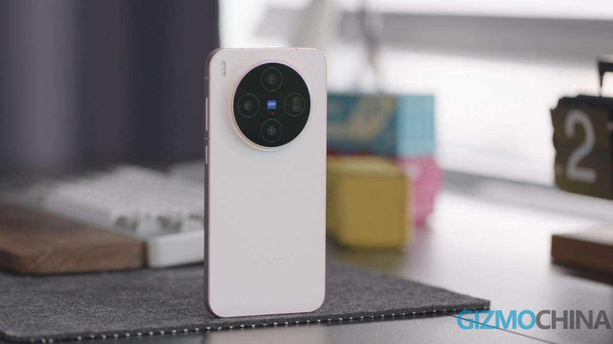
뉴스
기술의 변화, 매일 한눈에.
카메라 · 스마트폰 · AI, 해외 테크 소식을 모아 전합니다.
최근 발행2026-11-10
새로 들어온 소식
최신 뉴스
전체 4,248개 기사OPPO Reno17 시리즈 스마트폰 외관 첫 공개: 송우기 모델, 11월 16일 출시

OPPO Reno17 시리즈 스마트폰 색상 공개: 미스터리 캣, 아이스 문 화이트, 코코아 브라운, 첫눈 화이트
머스크의 반도체 공장 테라팹(Terafab) 계획 공개, 스토리지 칩 생산 능력 Samsung과 직접 경쟁
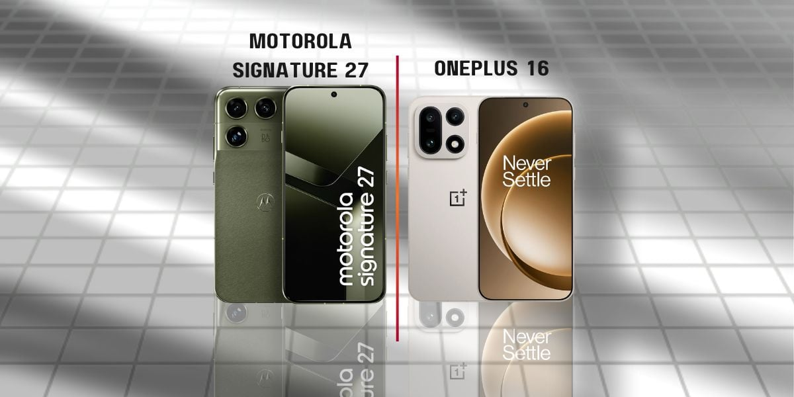
Motorola Signature 27 vs OnePlus 16: 같은 칩, 매우 다른 스마트폰
3대 메모리 제조사와 SEMI, 로봇 충전 표준화 협의로 웨이퍼 공장 자동화 수준 향상
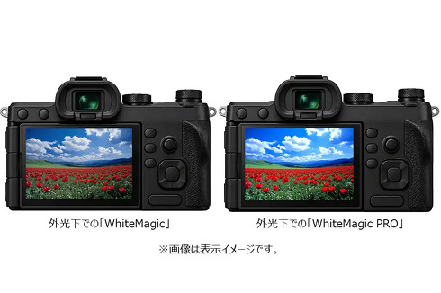
JDI, 디지털카메라 디스플레이 WhiteMagic PRO 양산: 3.15인치, 최대 밝기 2000cd/m², DCI-P3 지원
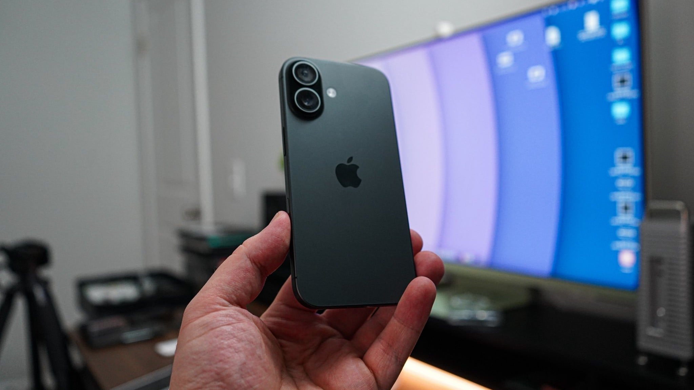
지금 iPhone 17을 구매해야 할까, 아니면 iPhone 18 출시를 기다려야 할까?
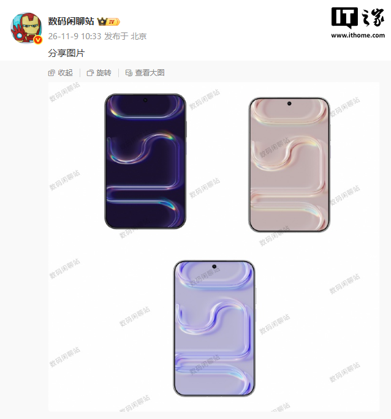
Huawei 싱망 OSTA O1 Pro로 예상되는 바 타입 스마트폰 전면 이미지 유출
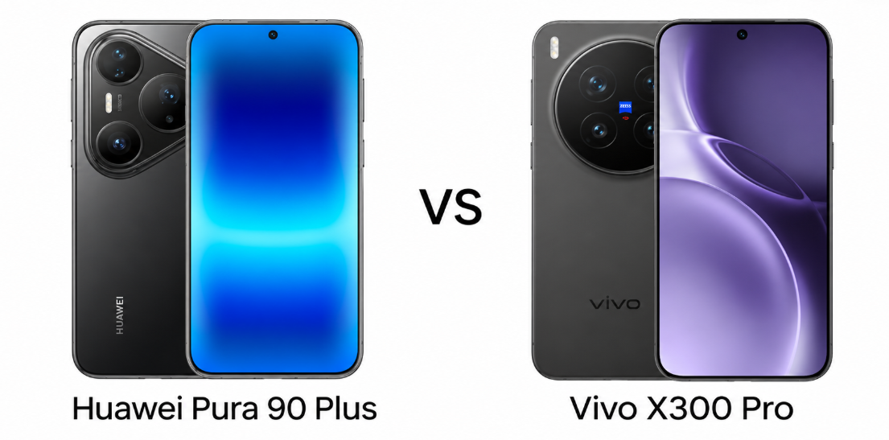
Huawei Pura 90 Plus vs Vivo X300 Pro: 더 비싼 스마트폰이 더 좋을까?

Huawei 이미지 공모전 시상식 및 10주년 기념 전시회 '따뜻한 공존' 11월 11일부터 15일까지 파리 그랑 팔레에서 개최
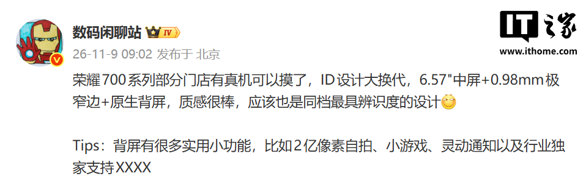
Honor 700 시리즈 스마트폰 후면 스크린 정보 유출: 2억 화소 셀카, 미니 게임, 다이내믹 알림, 업계 단독 XXXX 지원
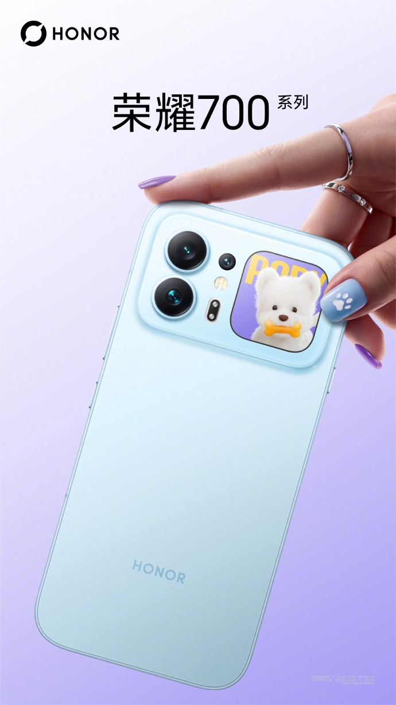
후면 스크린 심박수 및 혈중 산소 측정 지원: Honor 700 시리즈 스마트폰 4가지 색상 공식 이미지 공개

Honor 700 시리즈 스마트폰 신기술 11월 13일 공개, 사전 예약 시작

Google AI 책임자, '젤다의 전설: 시간의 오카리나 리마스터'를 Apple iPhone Duo에서 구동하는 모습 시연 후 저작권 논란으로 게시물 삭제
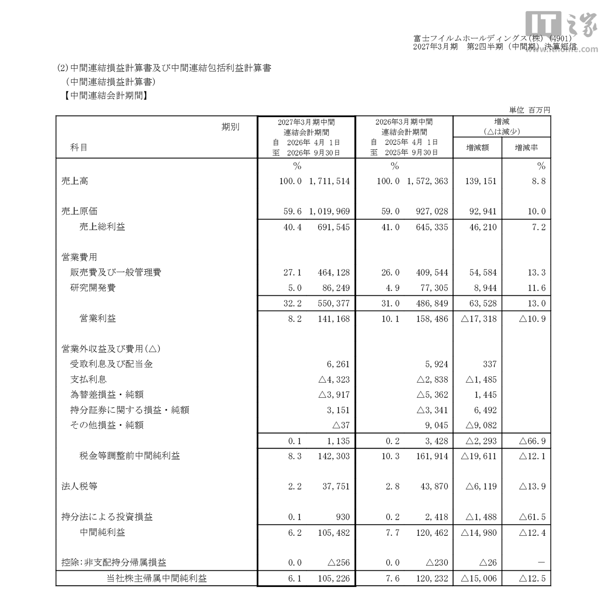
Fujifilm 2027 회계연도 상반기 모회사 귀속 순이익 1052억 2600만 엔, 전년 대비 12.5% 감소
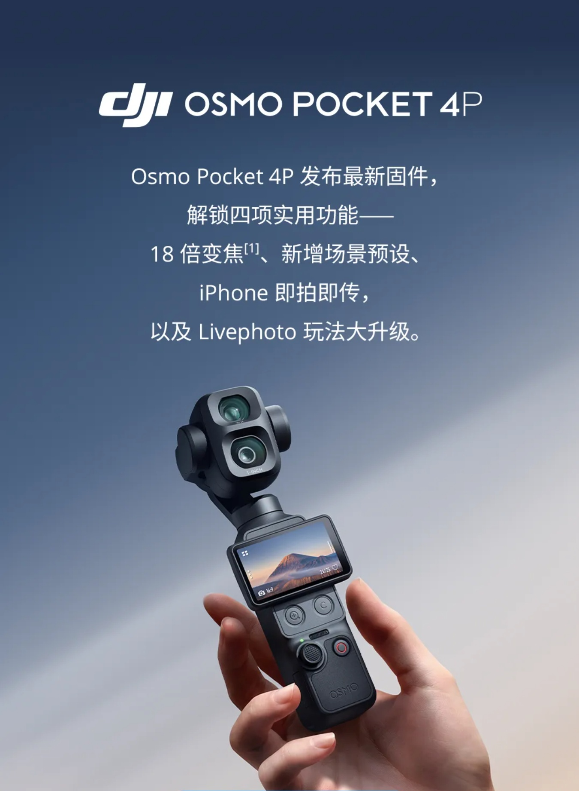
DJI 오즈모 포켓 4P 짐벌 카메라 펌웨어 업데이트: 18배 줌, iPhone 즉시 전송 등 기능 잠금 해제

인민 공군에 "새로운 장비" 등장, 중국 공격-11 무미익 비행체 드론 공개
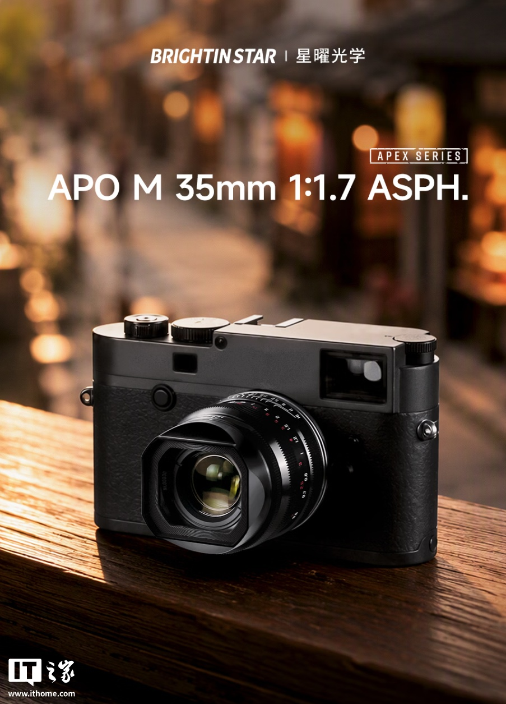
Brightin Star, APO M 35mm 1:1.7 ASPH. 렌즈 출시, 5299위안
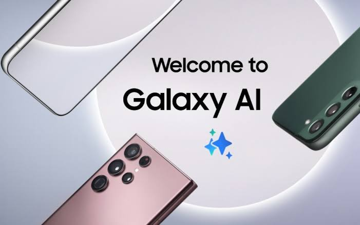
Samsung Galaxy AI 유료화 예정: 월 4.99달러, 무료 기능도 사용량 제한
삼성, One UI 9.5에서 Galaxy AI 프리미엄 및 DeX 업그레이드 테스트 중인 것으로 알려져

팡페이: Honor 700 전 모델에 AI 스마트 후면 스크린 탑재
검색 결과가 없습니다
다른 검색어를 입력하거나 필터를 초기화해 보세요.